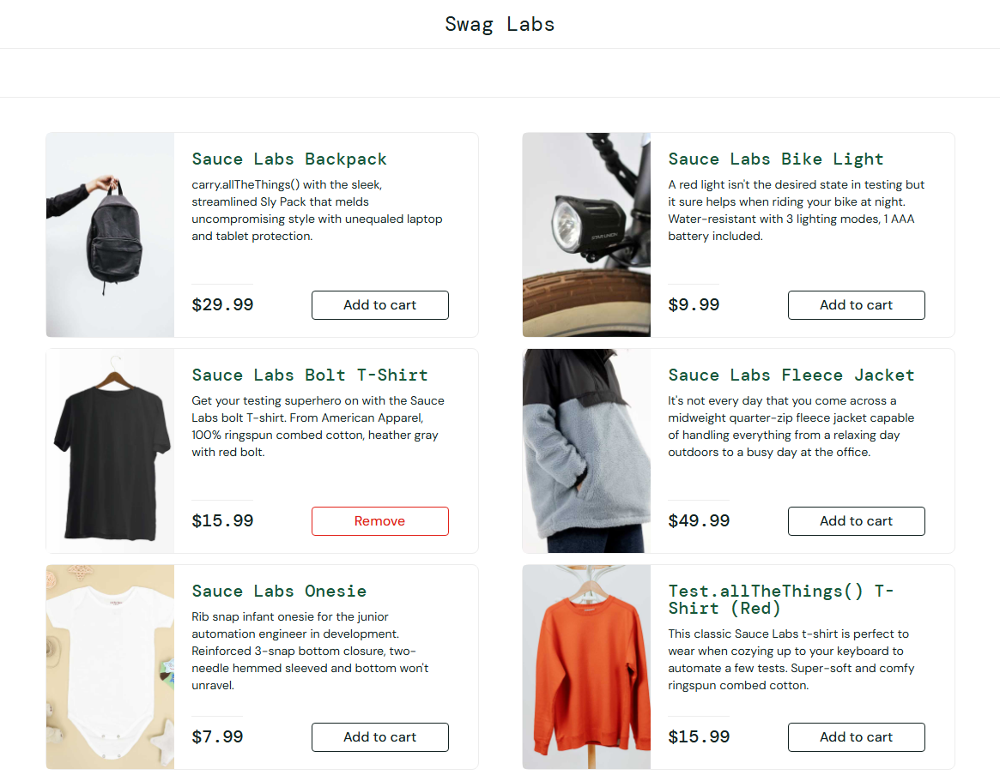
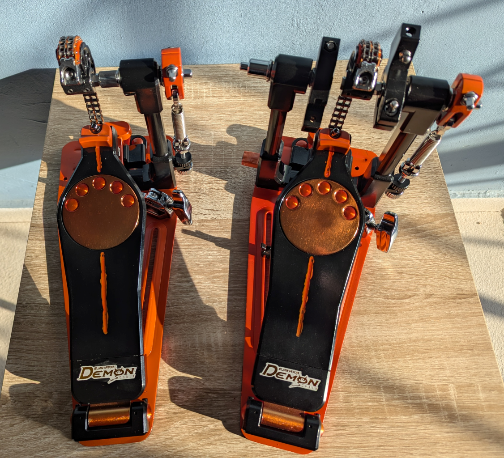

Hi, I'm
Jorge
Welcome to my personal page. This is a brief overview of my journey, where I share my
experiences, what I'm currently learning, and the projects I've been building.
I’ve always been someone who likes to know how things work and more importantly, how to make
them work better. My career has been a bit of an evolution, moving from the world of telecom to
software testing, then into the fast-paced lane of QA Automation and Data Analysis.

Experience
Senior QA Engineer
2023 - Present | Caliente InteractiveSr. QA Engineer of scalable web and mobile applications for the biggest betting company in Mexico. Ensuring a seamless experience across Web, Android, and iOS platforms. Mix of hand-on manual testing with a push toward automation in order to take repetitive regression tests and turn them into automated scripts. Collaboration closely with Business Analysts to plan testing strategies and hunt down potential blockers before they could stall production. Help dev team on TS to find software misbehavior resolutions.
Software Testing Engineer
2022 - 2023 | EPAM SystemsTesting integration of E2E applications for pharmaceutical companies. Ensuring their B2B sales platform stayed reliable for the businesses that depend on it. Test cases design for both manual and automatic execution, ensuring we had good coverage. SQL checks to verify the data flow, provide direct support to the dev team, clarifying technical specs (TS) and take full ownership of the defect lifecycle.
What I'm Learning
Testing and Quality Assurance
- Playwright
- Python
- Postman
- ISTQB
Tech Interests
- Data Visualization
- Data Networking
- AI Tools and Applications
- Machine Learning
Other Interests
- French
- Carpentry / Woodwork
- Drumming
My Projects

On the shelf site test automation
A sauce demo page test automation using POM which covers main and significant flows for E-Commerce.

DIY Drumming pedal Restoration
Restoration of an old P3002-C double pedal by pearl. I disassembled the entire pedal, cleaned every part, replaced the worn out parts, painted the frame with vibrant colorsand reassembled the pedal.
Contact Me
I'm currently open for new opportunities. Whether you have a question or just want to say hi, I'll try my best to get back to you!